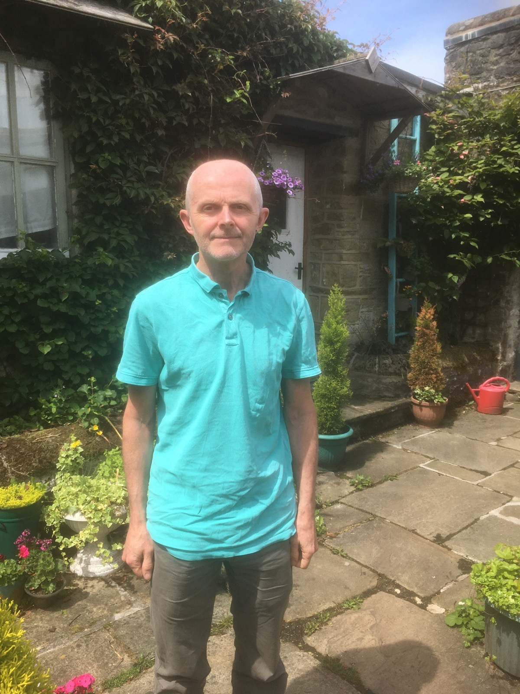

Staff perspectives on the challenges of being locked down
Dr Elinor Jones
Associate Professor – Teaching
Where were you working during the lockdown/remote working period?
I worked from my home, tucked away in a corner of my living room. As I don’t live in London, remote working was initially a novelty: I didn’t miss the commute to London! However, the novelty quickly wore off.
How much did your university experience change during lockdown versus before the pandemic?
It was like having a new job. I barely recognised it. The switch from ‘everything face to face’ to ‘everything online’ happened almost overnight.
Were there any aspects of lockdown teaching that you found particularly challenging?
Many! The university encouraged us to teach using a flipped method: make material available before a live session then use the session to review the material. For me, this meant completely rewriting two modules so that they would work in this format. That was a huge amount of work over a short period of time. Then came the live sessions themselves… It was hard to teach when very few students turned on their cameras. Teaching is the highlight of my job and not being able to see who I was teaching was disheartening. I hadn’t realised before this point just how much I relied on facial expressions of students to determine whether I was making any sense!
Were there any aspects that you preferred to in-person teaching?
Erm… I’m struggling to think of any to be honest. I did quite like the flipped learning style, and think I’ll carry on doing at least some of that in future.
Did you manage to stay connected with colleagues and research collaborators?
Yes and no. I was more connected to some of my colleagues: I was having daily Teams/Zoom calls with people who I would have usually seen for a few minutes each week for a quick hello in the corridor. The flip side to that was that I was less connected to other people that I would have usually spent quite a bit of time with each week. That’s going to take quite some time to build up again.
What kind of university experience (fully in-person or a blend of in-person and remote) do you hope for going forward?
I’m hoping that the experience of the pandemic will mean that we find a way of combining the best of both worlds. For me, that means collaborating with students to figure out what works best when teaching statistics. My gut instinct is that the flexibility that online learning gives is valued by students, but in-person teaching is more effective in getting ideas across. I’m hoping we’ll find a good balance, though it may take a few years of experimenting.
Dr Simon Harden
Associate Professor – Teaching

Where were you working during the lockdown/remote working period?
In the Derbyshire Peak District.
How much did your university experience change during lockdown versus before the pandemic?
Completely. COVID plus teaching took up all my time, so research and book writing (activities which might be equally well-managed remotely) stopped.
Were there any aspects of lockdown teaching that you found particularly challenging?
All of it: particularly seeing how students react to what you are saying.
Were there any aspects that you preferred to in-person teaching?
No.
Did you manage to stay connected with colleagues and research collaborators?
It was easier to have brief contact with more people (which I did), but I don’t regard online as a good substitute for face-to-face: it’s quantity but not quality.
What kind of university experience (fully in-person or a blend of in-person and remote) do you hope for going forward?
In person as much as possible. I think the move to more flipped classroom style teaching is a good one (not sure the students feel the same), and we have more teaching tools in our armoury, but there is no substitute for being face-to-face with students, whether in large lectures, tutorials, supervision or personal tutor meetings.
Dr Thomas Honnor
Lecturer – Teaching
Where were you working during the lockdown/remote working period?
I began the lockdown working from my bedroom in a shared flat in London. Once it became clear that remote working would last for a longer stretch, and play a greater role for the foreseeable future, I moved outside of London, into a place where I could have a dedicated working space and also be closer to family.
How much did your university experience change during lockdown versus before the pandemic?
As a teaching-focused member of staff, pre-lockdown a typical day would involve me being on campus, teaching and meeting with students and other members of staff. When lockdown began, that was turned on its head, with in-person tutorial teaching a rare treat only possible during periods of more relaxed regulations. The shift was quite dramatic and certainly took some time to acclimatise to.
Were there any aspects of lockdown teaching that you found particularly challenging?
I find securing student interaction to be a challenge at the best of times, and this was made more difficult with the move to teaching online. Teaching to a Zoom call where no-one else has their cameras on is certainly not as rewarding as teaching in-person, but with practice it was possible to develop techniques to secure more engagement.
Were there any aspects that you preferred to in-person teaching?
Pre-lockdown, I struggled to see the benefits and feasibility of flipped learning. The move towards online teaching allowed me to pre-record lectures and spend the live sessions diving into applications and discussing interesting links between related concepts.
Did you manage to stay connected with colleagues and research collaborators?
I enjoyed the regular department Zoom calls, where we could catch up on the latest news, alongside the odd bit of humour to lighten the mood. The group of teaching-focused staff in the department arranged similar regular calls, which were very useful to chat about all sorts of topics at a time when teaching and assessment were undergoing significant changes.
What kind of university experience (fully in-person or a blend of in-person and remote) do you hope for going forward?
I can see advantages to a blend of in-person teaching and resources made available online. I’ve been lucky enough to experience a good amount of in-person teaching in the past year and it certainly has its advantages, but there remains a place for the accessibility and convenience of online sessions.